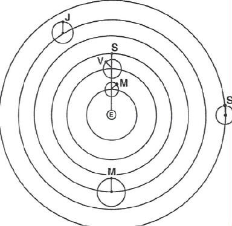

Figure 4: Ptolemaic system -- parallel positioning of the radius vectors of the superior planets with the sun's radius vector. Note that for the inferior planets (Mercury and Venus) their epicycle centers are fixed on the sun's radius vector. Also note that in this diagram Mars is at opposition and at perigee.